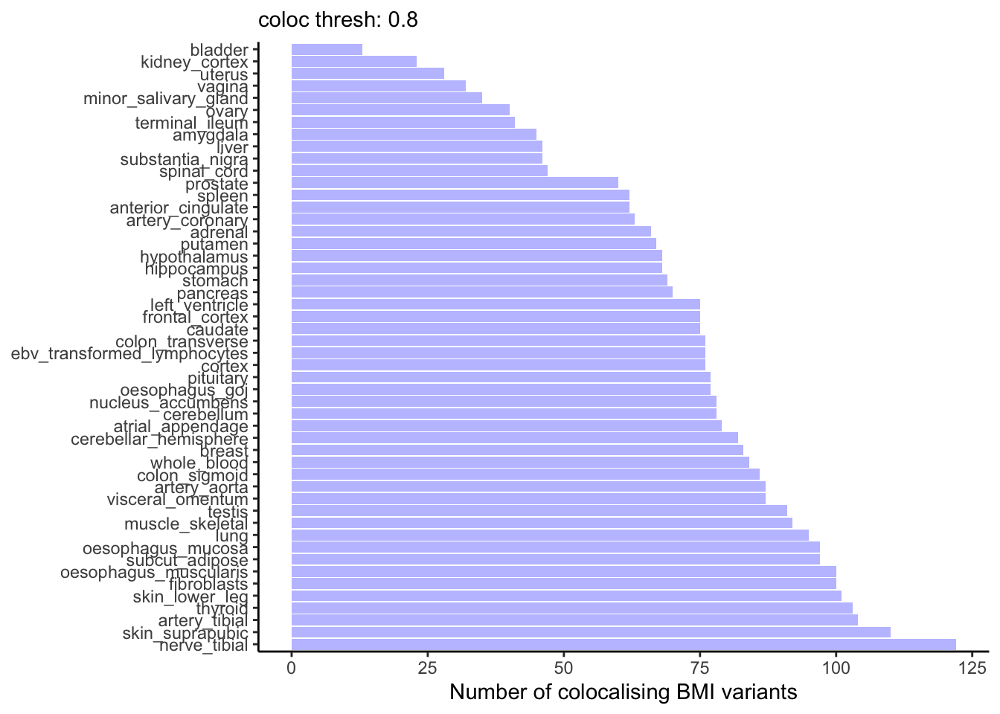
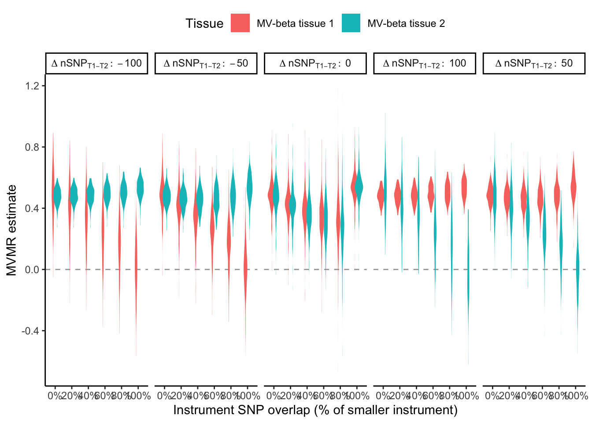
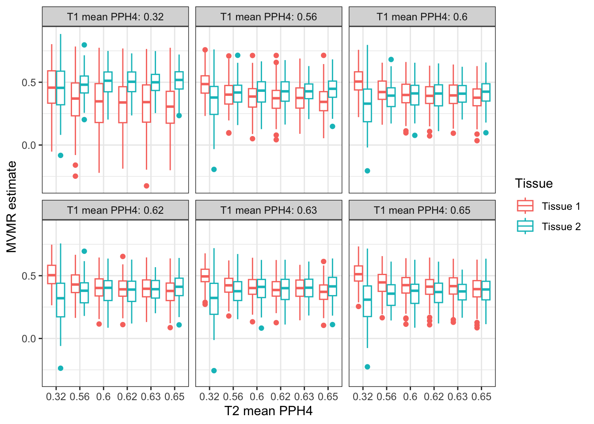
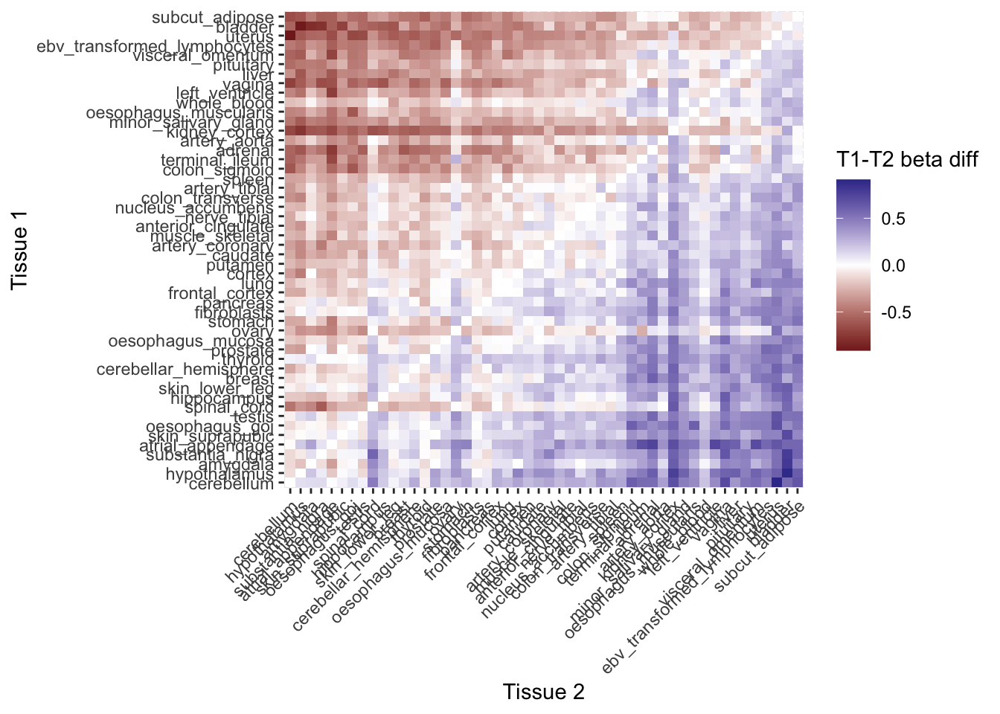
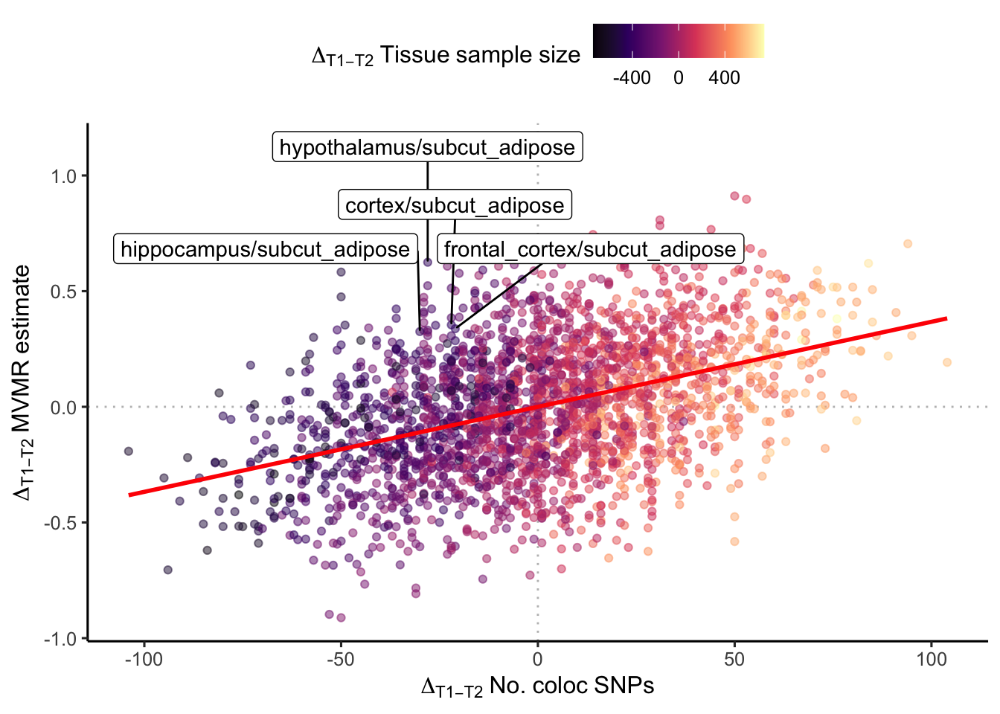

library(data.table)
library(ggplot2)
library(ggpubr)
library(ggrepel)
library(genepi.utils)
library(tibble)
library(knitr)Tissue-partitioned BMI instrument procedure
Motivation
What does the weighting by PPH4 do to tissue partitioned BMI instruments? Let’s simulate some tissue partitioned BMI MR results.
BMI data
First load the BMI GWAS.
bmi <- readRDS(file.path(TPMR_DIR, "output", "tmp_objects", "obj_bmi.RDS"))
clumps <- clump(as.data.table(bmi), p1=5e-8, r2=0.001, kb=10000, plink2=PLINK2, plink_ref=UKBB_REFERENCE)[index==TRUE]
bmi <- subset_gwas(bmi, clumps$rsid)
kable(head(clumps, 5), caption = "BMI lead variants")| rsid | chr | bp | ea | oa | eaf | beta | se | p | n | ncase | trait | id | strand | imputed | info | q | q_p | i2 | proxy_rsid | proxy_chr | proxy_bp | proxy_ea | proxy_oa | proxy_eaf | proxy_r2 | snp | index | clump |
|---|---|---|---|---|---|---|---|---|---|---|---|---|---|---|---|---|---|---|---|---|---|---|---|---|---|---|---|---|
| rs10007906 | 4 | 31023610 | A | C | 0.360300 | 0.0133000 | 0.0018000 | 0 | 686479 | NA | bmi | combined_bmi_giant_ukb_annot.txt | NA | NA | NA | NA | NA | NA | NA | NA | NA | NA | NA | NA | NA | rs10007906 | TRUE | 291 |
| rs1000940 | 17 | 5283252 | A | G | 0.701300 | -0.0154000 | 0.0018000 | 0 | 794558 | NA | bmi | combined_bmi_giant_ukb_annot.txt | NA | NA | NA | NA | NA | NA | NA | NA | NA | NA | NA | NA | NA | rs1000940 | TRUE | 142 |
| rs1007934 | 14 | 73463479 | A | G | 0.415000 | -0.0120000 | 0.0017000 | 0 | 692411 | NA | bmi | combined_bmi_giant_ukb_annot.txt | NA | NA | NA | NA | NA | NA | NA | NA | NA | NA | NA | NA | NA | rs1007934 | TRUE | 407 |
| rs10125137 | 9 | 118644190 | T | C | 0.641786 | -0.0117273 | 0.0020523 | 0 | 463005 | NA | bmi | combined_bmi_giant_ukb_annot.txt | NA | NA | NA | NA | NA | NA | NA | NA | NA | NA | NA | NA | NA | rs10125137 | TRUE | 811 |
| rs10131890 | 14 | 97258752 | A | C | 0.950300 | -0.0222000 | 0.0039000 | 0 | 691777 | NA | bmi | combined_bmi_giant_ukb_annot.txt | NA | NA | NA | NA | NA | NA | NA | NA | NA | NA | NA | NA | NA | rs10131890 | TRUE | 846 |
Heart failure data
Load the heart failure GWAS.
hf <- readRDS(file.path(TPMR_DIR, "output", "tmp_objects", "obj_hf_allcause.RDS"))
hf <- subset_gwas(hf, clumps$rsid)Harmonise the datasets
h <- MR(bmi, hf)
kable(head(as.data.table(h),5), caption = "Harmonised BMI:HF dataset")| rsid | chr | bp | ea | oa | bx | bxse | px | by | byse | py | proxy_e_snp | proxy_o_snp | index_snp | group | ld_info | exposure | outcome |
|---|---|---|---|---|---|---|---|---|---|---|---|---|---|---|---|---|---|
| rs10007906_C_A | 4 | 31023610 | A | C | 0.0133000 | 0.0018000 | 0 | 0.0039 | 0.0051 | 0.44980 | NA | NA | TRUE | NA | FALSE | bmi | hf_allcause |
| rs1000940_G_A | 17 | 5283252 | A | G | -0.0154000 | 0.0018000 | 0 | 0.0011 | 0.0050 | 0.82970 | NA | NA | TRUE | NA | FALSE | bmi | hf_allcause |
| rs1007934_G_A | 14 | 73463479 | A | G | -0.0120000 | 0.0017000 | 0 | -0.0092 | 0.0049 | 0.05931 | NA | NA | TRUE | NA | FALSE | bmi | hf_allcause |
| rs10125137_C_T | 9 | 118644190 | T | C | -0.0117273 | 0.0020523 | 0 | 0.0033 | 0.0049 | 0.50820 | NA | NA | TRUE | NA | FALSE | bmi | hf_allcause |
| rs10131890_C_A | 14 | 97258752 | A | C | -0.0222000 | 0.0039000 | 0 | -0.0211 | 0.0099 | 0.03310 | NA | NA | TRUE | NA | FALSE | bmi | hf_allcause |
Run the MR
res <- run_mr(h)
kable(res, caption = "BMI:HF Mendelian randomisation")| method | correlation | exposure | outcome | n_snp | b | b_se | p | intercept | int_se | int_p | qstat | qstat_p | fstat | condfstat | overdispersion | n_pc | n_hunted | slopehunter_pi | slopehunter_ent |
|---|---|---|---|---|---|---|---|---|---|---|---|---|---|---|---|---|---|---|---|
| mr_ivw | FALSE | bmi | hf_allcause | 874 | 0.4872820 | 0.0165599 | 0 | 0.0000000 | NA | NA | 1592.460 | 0 | 60.70091 | NA | NA | NA | NA | NA | NA |
| mr_egger | FALSE | bmi | hf_allcause | 874 | 0.5367727 | 0.0464790 | 0 | -0.0008232 | 0.0007224 | 0.2544728 | 1590.092 | 0 | NA | NA | NA | NA | NA | NA | NA |
| mr_weighted_median | FALSE | bmi | hf_allcause | 874 | 0.5078217 | 0.0236696 | 0 | 0.0000000 | NA | NA | NA | NA | NA | NA | NA | NA | NA | NA | NA |
| mr_weighted_mode | FALSE | bmi | hf_allcause | 874 | 0.5456300 | 0.0523114 | 0 | 0.0000000 | NA | NA | NA | NA | NA | NA | NA | NA | NA | NA | NA |
Plot MR
plot_mr(h, res)
Select variants - MR with a subset of BMI variants
In the Leyden et al. 2022 paper 86 variant colocalise with adipose tissue eQTLs and 140 colocalise with brain tissue eQTLs. There is overlap between the two tissues of 43 variants.
set.seed(123)
tissue1_varid <- sample(h@snps, 140)
overlap_varid <- sample(tissue1_varid, 43)
tissue2_varid <- c(overlap_varid, sample(h@snps[!h@snps %in% overlap_varid], 86-43))
# turn of variants not in either tissue
h@index_snp[!h@snps %in% c(tissue1_varid, tissue2_varid)] <- FALSE
h@exposure <- "BMI tissue 1/2 SNPs"
res1 <- run_mr(h)
kable(res1, caption = "BMI:HF Mendelian randomisation (Tissue 1 & 2 SNPs only)")| method | correlation | exposure | outcome | n_snp | b | b_se | p | intercept | int_se | int_p | qstat | qstat_p | fstat | condfstat | overdispersion | n_pc | n_hunted | slopehunter_pi | slopehunter_ent |
|---|---|---|---|---|---|---|---|---|---|---|---|---|---|---|---|---|---|---|---|
| mr_ivw | FALSE | BMI tissue 1/2 SNPs | hf_allcause | 177 | 0.5108471 | 0.0363407 | 0e+00 | 0.0000000 | NA | NA | 304.2402 | 0 | 61.28134 | NA | NA | NA | NA | NA | NA |
| mr_egger | FALSE | BMI tissue 1/2 SNPs | hf_allcause | 177 | 0.5475313 | 0.1037260 | 1e-07 | -0.0006034 | 0.0015974 | 0.7056336 | 303.9924 | 0 | NA | NA | NA | NA | NA | NA | NA |
| mr_weighted_median | FALSE | BMI tissue 1/2 SNPs | hf_allcause | 177 | 0.5730810 | 0.0494983 | 0e+00 | 0.0000000 | NA | NA | NA | NA | NA | NA | NA | NA | NA | NA | NA |
| mr_weighted_mode | FALSE | BMI tissue 1/2 SNPs | hf_allcause | 177 | 0.5887868 | 0.1022882 | 0e+00 | 0.0000000 | NA | NA | NA | NA | NA | NA | NA | NA | NA | NA | NA |
plot_mr(h, res1)
Run multivariable MR (unweighted)
# copy of BMI for tissue 1
bmi_t1 <- bmi
bmi_t1@id <- "bmi tissue 1"
bmi_t1@trait <- "bmi tissue 1"
# copy of BMI for tissue 2
bmi_t2 <- bmi
bmi_t2@id <- "bmi tissue 2"
bmi_t2@trait <- "bmi tissue 2"
# harmonise
h_mvmr <- MR(list(bmi_t1, bmi_t2), hf)
# turn of variants not in either tissue
h_mvmr@index_snp[!h_mvmr@snps %in% c(tissue1_varid, tissue2_varid)] <- FALSE
res2 <- run_mr(h_mvmr, methods="mr_ivw")
kable(res2, caption = "BMI:HF MV Mendelian randomisation")| method | correlation | exposure | outcome | n_snp | b | b_se | p | intercept | int_se | int_p | qstat | qstat_p | fstat | condfstat | overdispersion | n_pc | n_hunted | slopehunter_pi | slopehunter_ent |
|---|---|---|---|---|---|---|---|---|---|---|---|---|---|---|---|---|---|---|---|
| mr_mvivw | FALSE | bmi tissue 1 | hf_allcause | 177 | 0.5108471 | 0.0363407 | 0 | 0 | NA | NA | 302.5116 | 0 | NA | 0 | NA | NA | NA | NA | NA |
| mr_mvivw | FALSE | bmi tissue 2 | hf_allcause | 177 | 0.5108471 | 0.0363407 | 0 | 0 | NA | NA | 302.5116 | 0 | NA | 0 | NA | NA | NA | NA | NA |
plot_mr(h_mvmr, res2)
eQTL colocalising BMI variants
Number of colocalising variants per tissue
coloc_thresh <- 0.8
coloc_results <- fread(file.path(TPMR_DIR, "output", "tables", "coloc_results.tsv.gz"))
coloc_counts <- (coloc_results
[locus_trait=="bmi" & grepl("^bmi", trait.x) & !grepl("^bmi|^hf_", trait.y) & grepl("protein_coding", gene_type.y)]
[, num_coloc_genes := sum(pph4>coloc_thresh), by=trait.y]
[, .SD[which.max(pph4)], by=.(locus_index_rsid, trait.y)]
[, .(num_coloc_genes= num_coloc_genes[1],
num_coloc_pph4 = sum(pph4>coloc_thresh),
mean_pph4 = mean(pph4),
mean_sample_n = mean(sample_n.y)), by=c(tissue="trait.y")]
[, tissue := factor(tissue, levels = tissue[order(-`num_coloc_pph4`)])]
)
ggplot(coloc_counts, aes(y = tissue, x = `num_coloc_pph4`)) +
theme_classic() +
geom_col(fill= "blue", alpha = 0.3) +
labs(subtitle = paste("coloc thresh:", coloc_thresh),
x = "Number of colocalising BMI variants") +
theme(axis.title.y = element_blank())
Determinants of colocalisation number
Does this depend on eqtl sample size????
ggplot(coloc_counts, aes(y = mean_sample_n, x = num_coloc_pph4, color = mean_pph4, size = num_coloc_genes)) +
geom_point() +
geom_text_repel(aes(label = tissue), size = 2, color="black", max.overlaps = Inf) +
scale_color_viridis_c(option="mako") +
theme_classic() +
labs(subtitle = paste("coloc thresh:", coloc_thresh),
color = "Mean PPH4",
size = "No. coloc genes",
y = "No. colocalising BMI variants",
x = "Sample size")
Effect of number of colocalising loci on MVMR result - 1
Simple analysis: hold constant the number of colocalising variants in tissue 1 (set to median: 73) and hold the PPH4 weighting for colocalising variants at 0.9 and the for the non-colocalising variants at 0.2.
num_loci <- expand.grid(num_t1 = round(median(coloc_counts$num_coloc_pph4)),
num_t2 = seq(min(coloc_counts$num_coloc_pph4), max(coloc_counts$num_coloc_pph4)),
pph4_hi = 0.9,
pph4_lo = 0.2) |> as.data.table()
unique_num_loci <- sort(unique(c(num_loci$num_t1, num_loci$num_t2)))
unique_num_loci <- setNames(unique_num_loci, as.character(unique_num_loci))
loci_indicies <- lapply(unique_num_loci, function(num_l) {
set.seed(123)
sample(1:length(h_mvmr@snps), num_l, replace = FALSE)
})
mr_num_loci <- num_loci[, {
h_tmp <- copy(h_mvmr)
t1_incides <- loci_indicies[[as.character(num_t1)]]
t2_incides <- loci_indicies[[as.character(num_t2)]]
h_tmp@index_snp <- ifelse(1:length(h_tmp@snps) %in% union(t1_incides, t2_incides), TRUE, FALSE)
h_tmp@bx[t1_incides,1] <- h_tmp@bx[t1_incides,1] * pph4_hi
h_tmp@bx[t2_incides,2] <- h_tmp@bx[t2_incides,2] * pph4_hi
h_tmp@bx[setdiff(t2_incides, t1_incides),1] <- h_tmp@bx[setdiff(t2_incides, t1_incides),1] * pph4_lo
h_tmp@bx[setdiff(t1_incides, t2_incides),2] <- h_tmp@bx[setdiff(t1_incides, t2_incides),2] * pph4_lo
h_tmp@exposure <- c("Tissue 1", "Tissue 2")
r <- run_mr(h_tmp, methods="mr_ivw")
}, by = .(num_t1, num_t2)]
ggplot(mr_num_loci[, `:=`(b_lb = b-b_se*1.96,
b_ub = b+b_se*1.96)],
aes(x=num_t2, y=b, ymin=b_lb, ymax=b_ub, color=exposure)) +
geom_errorbar(width=0.2, position = position_dodge(0.2)) +
geom_point(position = position_dodge(0.2)) +
theme_bw() +
labs(y = "MVMR estimate (tpBMI vs HF)",
x = "Number of tissue 2 loci",
color = "Tissue",
subtitle = paste0("Number of loci for tissue 1 fixed at ", num_loci$num_t1[1]))
Effect of number of colocalising loci on MVMR result - 2
Now do the same but vary both the number of colocalising variants in tissue 1 and 2 (grid search).
num_loci <- expand.grid(num_t1 = seq(min(coloc_counts$num_coloc_pph4), max(coloc_counts$num_coloc_pph4), 50),
num_t2 = seq(min(coloc_counts$num_coloc_pph4), max(coloc_counts$num_coloc_pph4), 50),
overlap = seq(0, 1, 0.2),
seed = 2000:2100,
pph4_hi = 0.9,
pph4_lo = 0.1) |> as.data.table()
library(future)
library(furrr)
plan(multisession)
mr_num_loci <- future_pmap_dfr(num_loci, function(num_t1, num_t2, overlap, seed, pph4_hi, pph4_lo) {
h_tmp <- copy(h_mvmr)
# randomly sort the BMI SNP indices
set.seed(seed)
sram_idx <- sample.int(length(h_mvmr@snps))
# indicies of the variants to use
overlap_n <- round(min(num_t1, num_t2) * overlap)
t1i <- sram_idx[1:num_t1]
t2i <- sram_idx[(num_t1-overlap_n+1):(num_t2 + num_t1-overlap_n)]
t12i <- intersect(t1i, t2i) # both tissues
ut1i <- setdiff(t1i, t12i) # only tissue 1
ut2i <- setdiff(t2i, t12i) # only tissue 2
# which snps go into the instrument
h_tmp@index_snp <- 1:length(h_mvmr@snps) %in% c(t12i, ut1i, ut2i)
# weight tissue 1 betas
h_tmp@bx[ut2i,1] <- h_tmp@bx[ut2i,1] * pph4_lo
h_tmp@bx[t1i,1] <- h_tmp@bx[t1i,1] * pph4_hi
# weight tissue 2 betas
h_tmp@bx[ut1i,2] <- h_tmp@bx[ut1i,2] * pph4_lo
h_tmp@bx[t2i,2] <- h_tmp@bx[t2i,2] * pph4_hi
# naming
h_tmp@exposure <- c("MV-beta tissue 1", "MV-beta tissue 2")
# run mr
r <- run_mr(h_tmp, methods="mr_ivw")
r[, `:=`(num_t1 = num_t1,
num_t2 = num_t2,
num_diff = num_t1-num_t2,
overlap = overlap,
seed = seed,
pph4_lo = pph4_lo,
pph4_hi = pph4_hi)]
return(r)
})
# ggplot(mr_num_loci, aes(x=as.factor(num_diff), y=b, fill=exposure, color=num_t1)) +
# geom_hline(yintercept = 0.0, linetype="dashed", color="darkgray") +
# geom_violin(width=1, position= position_dodge(width = 0.5), color=NA) +
# theme_classic() +
# labs(x = "Difference in instrument size (num SNPs, T1-T2)",
# y = "MVMR estimate",
# fill = "Tissue") +
# facet_wrap(~overlap,
# labeller = labeller(overlap = function(x) paste0("Loci overlap: ", scales::percent(as.numeric(x)))))
ggplot(mr_num_loci[, num_diff_lab := paste0("Delta~nSNP[T1-T2]:~ ", num_diff)],
aes(x=as.factor(overlap), y=b, fill=exposure, color=num_t1)) +
geom_hline(yintercept = 0.0, linetype="dashed", color="darkgray") +
geom_violin(width=1, position= position_dodge(width = 0.5), color=NA) +
scale_x_discrete(labels = function(x) scales::percent(as.numeric(x))) +
theme_classic() +
theme(legend.position = "top") +
labs(x = "Instrument SNP overlap (% of smaller instrument)",
y = "MVMR estimate",
fill = "Tissue") +
facet_wrap(~num_diff_lab,
nrow = 1,
labeller = label_parsed)
BMI:eQTL PPH4 distributions by tissue
Now lets look at the actual distributions of the PPH4 values in each tissue, since they are not fixed like in the above analyses. Take the maximum PPH4 from genes in close proximity to each variant, in each tissue and plot the distributions - these are the weights that would be used in the tissue-partitioned MR procedure.
num_tissues <- 6
tissues_subset <- levels(coloc_counts$tissue)[as.integer(seq(1, length(levels(coloc_counts$tissue)), length.out=num_tissues))]
coloc_subset <- coloc_results[locus_trait=="bmi" & trait.x=="bmi" & (trait.y %in% tissues_subset), .SD[which.max(pph4)], by=.(locus_index_rsid,trait.y)]
density <- coloc_subset[, {
den <- density(pph4, n=1000)
.(pph4 = scales::rescale(den$x, 0:1), prob = den$y)
}, by = c(tissue="trait.y")][, tissue := factor(tissue, levels = levels(coloc_counts$tissue))]
ggplot(density, aes(x=pph4, y=prob, color=tissue)) +
theme_classic() +
geom_line() +
labs(y = "Density")
Use of these distributions in simulations
If we want ‘real-world’ PPH4 weights for use in simulations we can just sample from these density distributions. Here is a quick check to show that sampling from them replicates the shape.
tissues <- expand.grid(tissue = unique(density$tissue), stringsAsFactors = F) |> as.data.table()
set.seed(123)
res_sim_density <- tissues[, {
.(sim_pph4 = sample(density[tissue==.BY$tissue, pph4], round(length(h_mvmr@bx[,1])/2), prob = density[tissue==.BY$tissue, prob], replace = TRUE))
}, by = .(tissue)]
ggplot(res_sim_density, aes(x=sim_pph4, color=tissue)) +
theme_classic() +
geom_density() +
labs(y = "Simulated density",
x = "Simulated PPH4",
color = "Tissue")
Effect different PPH4 weights
Weight the BMI betas by their respective maximum PPH4 value, see how this changes the relationship between the beta for BMI and beta for HF, dependent on which tissue is providing the betas. Tissues with greater or fewer colocalising variants affect push the betas up or down more, respectively. I hold one tissue constant (reference) to more easily appreciate how the other tissue’s colocalisation characteristics affect things.
ref_tissue <- levels(density$tissue)[1]
tissue_pairs <- expand.grid(t1 = ref_tissue, t2 = unique(density$tissue), stringsAsFactors = F) |> as.data.table()
set.seed(123)
t1_pph4 <- sample(density[tissue==ref_tissue, pph4], length(h_mvmr@bx[,1]), prob = density[tissue==ref_tissue, prob], replace = TRUE)
res_weighted <- tissue_pairs[, {
h_tmp <- h_mvmr
t2_pph4 <- sample(density[tissue==.BY$t2, pph4], length(h_tmp@bx[,1]), prob = density[tissue==.BY$t2, prob], replace = TRUE)
h_tmp@bx[,1] <- h_tmp@bx[,1] * t1_pph4
h_tmp@bx[,2] <- h_tmp@bx[,2] * t2_pph4
h_tmp@index_snp <- ifelse(t1_pph4>coloc_thresh | t2_pph4>coloc_thresh, TRUE, FALSE)
.(tissue = rep(c(paste0("Ref: ", ref_tissue),"Comparator"), each=sum(h_tmp@index_snp)),
beta_bmi = c(h_tmp@bx[h_tmp@index_snp,1], h_tmp@bx[h_tmp@index_snp,2]),
beta_hf = rep(h_tmp@by[h_tmp@index_snp],2),
mean_pph4_t1 = mean(t1_pph4[t1_pph4>coloc_thresh | t2_pph4>coloc_thresh]),
mean_pph4_t2 = mean(t2_pph4[t1_pph4>coloc_thresh | t2_pph4>coloc_thresh]),
rmse_pph4 = sqrt(mean((t1_pph4[t1_pph4>coloc_thresh | t2_pph4>coloc_thresh] - t2_pph4[t1_pph4>coloc_thresh | t2_pph4>coloc_thresh])^2))
)
}, by = .(t1,t2)]
res_weighted[, t2 := factor(t2, levels = unique(t2[order(-mean_pph4_t1)]))]
ggplot(res_weighted, aes(x=beta_bmi, y=beta_hf, color=tissue)) +
geom_point() +
geom_text(data = unique(res_weighted[grepl("Ref", tissue)], by="t2"),
aes(x = 0.0,
y = -0.04,
label = sprintf("Tis mPPH4=%.3f", mean_pph4_t2)),
color="black", size=2) +
geom_text(data = unique(res_weighted[!grepl("Ref", tissue)], by="t2"),
aes(x = 0.0,
y = -0.07,
label = sprintf("Ref mPPH4=%.3f", mean_pph4_t1)),
color="black", size=2) +
geom_smooth(method="lm", se=F,fullrange = TRUE) +
facet_wrap(~t2, labeller = labeller(t2 = function(x) gsub("_", " ", x))) +
labs(subtitle = paste("coloc thresh:", coloc_thresh),
y = "Heart failure beta",
x = "BMI beta (PPH4-weighted)",
color = "Tissue")
IVW regression by different PPH4 weighting distributions
Perform MVMR with the weighted BMI instruments. Lets look at holding a poorly colocalising tissue constant compared to the best colocalising tissues.
Function to weight betas and run MR
#' @title TPMR helper function
#' @param mrobj genepi.utils MR object (exposures BMI:BMI, outcome HF)
#' @param density data.table of PPH4 density distributions cols: tissue | pph4 | prob
#' @param ref character vector, tissues in density$tissue
#' @param comp character vector, tissues in density$tissue
#' @param coloc_thresh numeric 0-1
#' @param rep integer, number of replications (random sampling of BMI variants into instrument)
#' @returns data.table of MR results
#'
tpmr <- function(obj, ref, comp, coloc_thresh, rep = 1, density = NULL, pph4 = NULL) {
# either density or actual PPH4 values
stopifnot("Provide either denisty distributions or actual PPH4 values" =
sum(sapply(list(density, pph4), is.null)) == 1)
stopifnot("Replications must be 1 if using actual PPH4 values" = ifelse(rep > 1 & !is.null(pph4), F, T))
# run the MR for each of the exposure combinations
tissue_pairs <- expand.grid(t1 = as.character(ref),
t2 = as.character(comp),
seed = 2000:(2000+rep-1),
stringsAsFactors = F) |> as.data.table()
library(future)
library(furrr)
plan(multisession)
mr_weighted <- future_pmap_dfr(tissue_pairs, function(t1, t2, seed) {
mrobj <- copy(obj)
if (!is.null(density)) {
# generate the PPH4 values randomly for the variants
set.seed(seed)
t1_pph4 <- sample(density[tissue==t1, pph4], length(mrobj@snps), prob = density[tissue==t1, prob], replace = TRUE)
set.seed(seed+1)
t2_pph4 <- sample(density[tissue==t2, pph4], length(mrobj@snps), prob = density[tissue==t2, prob], replace = TRUE)
} else if(!is.null(pph4)) {
chrpos <- data.table(chr = as.integer(mrobj@chr), bp = mrobj@bp, t1 = t1, t2 = t2)
chrpos[pph4, t1.pph4 := i.pph4, on=c("chr"="chr","bp"="bp","t1"="tissue")]
chrpos[pph4, t2.pph4 := i.pph4, on=c("chr"="chr","bp"="bp","t2"="tissue")]
t1_pph4 <- chrpos$t1.pph4
t2_pph4 <- chrpos$t2.pph4
t1_pph4[is.na(t1_pph4)] <- 0
t2_pph4[is.na(t2_pph4)] <- 0
}
# based on the distribution of PPH4, which SNPs are included
include <- ifelse(t1_pph4 > coloc_thresh | t2_pph4 > coloc_thresh, TRUE, FALSE)
# update the MR object, turn off the excluded snps (@index_snp slot)
mrobj@bx[,1] <- mrobj@bx[,1] * t1_pph4
mrobj@bx[,2] <- mrobj@bx[,2] * t2_pph4
mrobj@index_snp <- include
mrobj@exposure[1] <- ifelse(length(ref)==1, paste0("Ref: ", ref_tissue), "Tissue 1")
mrobj@exposure[2] <- ifelse(length(ref)==1, "Comparator", "Tissue 2")
# run the MR
r <- run_mr(mrobj, methods="mr_ivw")
# add info about the instrument used
r[, `:=`(t1 = t1,
t2 = t2,
seed = seed,
n_sig_snps = c(sum(t1_pph4 > coloc_thresh), sum(t2_pph4 > coloc_thresh)),
n_overlap_snps = sum(t1_pph4 > coloc_thresh & t2_pph4 > coloc_thresh),
pct_t1_overlap = sum(t1_pph4 > coloc_thresh & t2_pph4 > coloc_thresh) / length(t1_pph4),
mean_pph4_t1 = mean(t1_pph4[include]),
mean_pph4_t2 = mean(t2_pph4[include]),
rmse_pph4 = sqrt(mean((t1_pph4[include] - t2_pph4[include])^2)),
rmse_wbeta = sqrt(mean((mrobj@bx[,1] - mrobj@bx[,2])^2)))]
r[, c("overdispersion", "n_pc", "n_hunted", "slopehunter_pi", "slopehunter_ent") := NULL]
})
return(mr_weighted)
}Different PPH4 distributions against each other
# run TPMR
mr_weighted <- tpmr(obj=h_mvmr, density=density,
ref= unique(density$tissue),
comp=unique(density$tissue),
coloc_thresh=0.8,
rep = 100)
# reorder for plotting
mr_weighted[, mean_pph4_t1_lab := round(mean(mean_pph4_t1),2), by=.(t1)]
mr_weighted[, mean_pph4_t2_lab := round(mean(mean_pph4_t2),2), by=.(t2)]
mr_weighted[, mean_n_sig_snps := round(mean(mean_pph4_t2),0), by=.(t1,t2)]
ggplot(mr_weighted,
aes(x=as.factor(mean_pph4_t2_lab), y=b, color=exposure)) +
geom_boxplot() +
theme_bw() +
labs(y = "MVMR estimate", x = "T2 mean PPH4", color = "Tissue") +
facet_wrap(~ as.factor(mean_pph4_t1_lab),
labeller = labeller(`as.factor(mean_pph4_t1_lab)`=function(x) paste0("T1 mean PPH4: ",x)))
ggplot(mr_weighted[, .(b=mean(b)), by=.(t1,t2,exposure)][, .(b_diff=b[1]-b[2]), by=.(t1,t2)],
aes(y=t1, x=t2, fill=b_diff)) +
geom_tile() +
scale_fill_gradient2() +
theme(axis.text.x = element_text(angle=45, hjust=1)) +
labs(y = "Tissue 1", x = "Tissue 2", fill = "T1-T2 beta diff")All tissue pairs MR (actual PPH4 values)
tissue_pph4_vals <- coloc_results[locus_trait=="bmi" &
trait.x=="bmi" &
gene_type.y=="protein_coding",
.SD[which.max(pph4)],
by=.(locus_index_rsid, tissue=trait.y),
.SDcols=c("chr", "bp", "pph4")]
tissue_pph4_vals <- tidyr::complete(tissue_pph4_vals, locus_index_rsid, tissue) |> as.data.table()
mr_actual <- tpmr(obj=h_mvmr, pph4=tissue_pph4_vals,
ref= unique(tissue_pph4_vals$tissue),
comp=unique(tissue_pph4_vals$tissue),
coloc_thresh=0.8)
ggplot((mr_actual
[coloc_counts, t1_n := i.mean_sample_n, on=c("t1"="tissue")]
[coloc_counts, t2_n := i.mean_sample_n, on=c("t2"="tissue")]
[, `:=`(b_diff = b[exposure=="Tissue 1"]-b[exposure=="Tissue 2"],
snp_diff = n_sig_snps[exposure=="Tissue 1"]-n_sig_snps[exposure=="Tissue 2"],
pph4_diff = mean_pph4_t1-mean_pph4_t2,
nsamp_diff = t1_n - t2_n), by=.(t1,t2)]
[, `:=`(t1 = factor(t1, levels = unique(t1[order(-b_diff)])),
t2 = factor(t2, levels = unique(t1[order(-b_diff)])))]),
aes(y=t1, x=t2, fill=b_diff)) +
geom_tile() +
scale_fill_gradient2() +
theme(axis.text.x = element_text(angle=45, hjust=1)) +
labs(y = "Tissue 1", x = "Tissue 2", fill = "T1-T2 beta diff")
MVMR estimates depend on difference in instrument size (which also depends on difference in sample size)
ggplot((mr_actual
[coloc_counts, t1_n := i.mean_sample_n, on=c("t1"="tissue")]
[coloc_counts, t2_n := i.mean_sample_n, on=c("t2"="tissue")]
[, `:=`(b_diff = b[exposure=="Tissue 1"]-b[exposure=="Tissue 2"],
snp_diff = n_sig_snps[exposure=="Tissue 1"]-n_sig_snps[exposure=="Tissue 2"],
pph4_diff = mean_pph4_t1-mean_pph4_t2,
nsamp_diff = t1_n - t2_n), by=.(t1,t2)]
),
aes(y=b_diff, x=snp_diff, color=nsamp_diff)) +
geom_hline(yintercept = 0.0, linetype="dotted", color="grey") +
geom_vline(xintercept = 0.0, linetype="dotted", color="grey") +
geom_point(alpha=0.3) +
scale_color_viridis_c(option="magma") +
geom_smooth(method="lm", se=FALSE, color="red") +
theme_classic2() +
theme(legend.position = "top") +
labs(y = expression(Delta[T1-T2]~MVMR~estimate),
x = expression(Delta[T1-T2]~No.~coloc~SNPs),
color = expression(Delta[T1-T2]~Tissue~sample~size))
Interpretation
Is the MVMR estimate mostly related to the difference in the relative number of colocalising SNPs in tissue A vs. tissue B? The tissue with fewer colocalising SNPs will liekly be overpowered in the MVMR by the tissue with a greater number of colocalising SNPs. Yet, the number of colocalising SNPs is closely related to the sample size of the eQTL dataset.